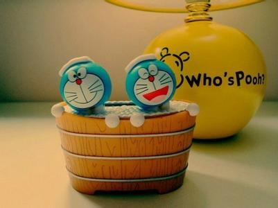

独自走在路上，有两条路，一条是阳光大道宽广却只能这样走着。第二条是曲折蜿蜒，历经艰辛，却能看到理想的彼岸。我选择了第二条路，我想看到这条路上的风景，绽放之花会不会为我开放，到底能不能到达理想见到彩虹。。
有时相信的，也未必开花，为什么呢？因为是境界是有种等待，并不是无奈。成长就这样，我为什么会疯狂，为什么会这样？因为我勇敢的向前，我多么向往勇敢追梦的样子，像梦在前方，青春在你们身上，我很想你。也很希望见到你，告诉你“我跟你一样，也想做个追梦的人，勇敢的向前，全世界看到。
季节一次一次更迭过往，也在一步一步实现愿望。这是很令人惊喜，也是感到欣慰的，是的，一切都没有变，一切都在明天重新开始，也传递着正能量，一切并不是都是那么的是想象的样子开放，但请不要忘“生活一直向前，不段进行着，去寻找阳光，沐浴着 生活不会累，也不孤独，有过孤独，也不怕，是因为有能力展翅高飞。
